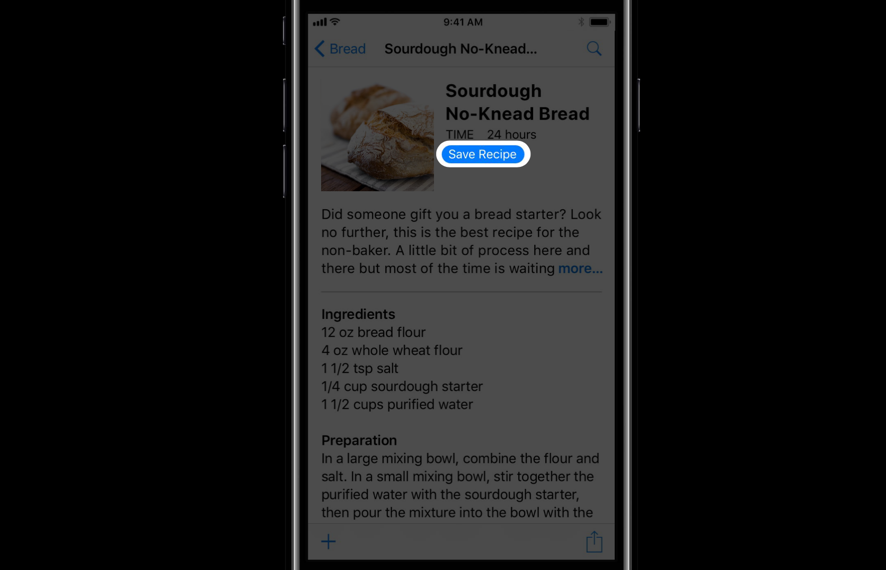
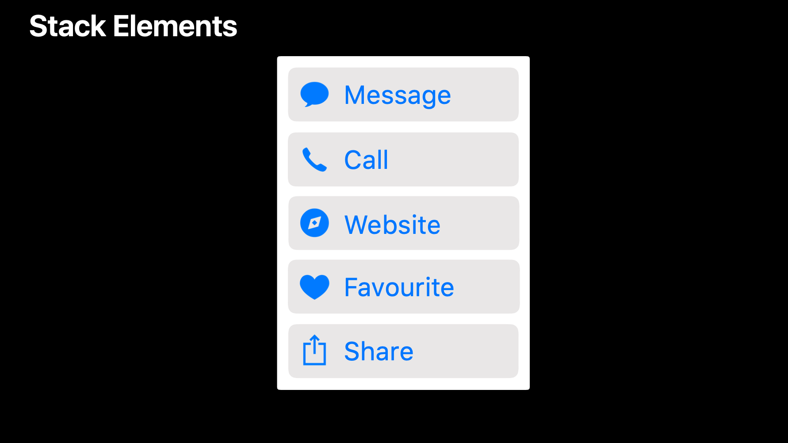
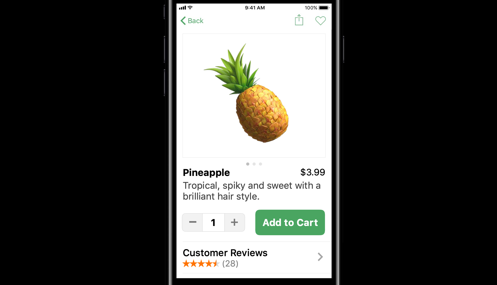

你曾经考虑过世界上和你有着相同激情、需求但却不能使用你的 app 的其他人是怎样的吗？如果我们考虑下在十亿 Apple 设备背后有许多我们的潜在客户会是什么样？

世界上每七个人中就有一个人有残疾，我们可以很确定那些想使用我们 app 或者平台的人是具备各种能力和本领的。
人在认知能力、社交能力、灵敏性、机动性、视觉和听觉上是很大不同的。
为了充分了解并理解信息，我们在视觉、听觉、触觉的感知能力是十分重要的。如果你的某种能力被丢掉或被拿掉会发生什么？那是有可能在我们的人生轨迹中逐渐发生或者突然发生的。
有身体残疾的人还包括一些极端的情况，例如大脑麻痹或瘫痪，亦或是腕管综合症或者是暂时的手腕损伤。
视觉能力丧失的人们包括失明、视力下降、色盲。还有由环境引起的能力的丧失，比如耀眼的屏幕或者我们都体验过的那种从黑暗电影院一下子走出来时的临时的失明现象。
听力丧失是听觉残疾的主要类型。无论是先天的还是后天的，iPhone 的助听工具都改变了人们的生活。
当我们把我们的通知队列按视觉、口头和触觉反馈展开来，我们可以让每个人都获得通知。根据统计数字显示，在美国每 68 个孩子中就有 1 个孩子被诊断出「自闭症谱系障碍」。自闭症个体对于突然而来的声音或者纷乱的图片都很敏感。也有许多成年人和孩子患有阅读障碍，包含多个视觉或者听觉选项可以帮助有阅读障碍的人，对于失明和视力低下的人也有明显帮助。
所以，如果我们思考了世界的每一个人都有着怎样的能力和本领，触及更多人的下一步就是让你的 app 可接近、可进入、可使用（accessible）。但是 accessible 这个词并不是被发明用来描述这些能力的残缺，它是让我们每个人都能用上，容易触及到、容易获得、容易使用、容易理解，针对于每一个人。
不管你是有暂时的还是永久的伤害、年轻或年老、对科技陌生还是熟悉，不管你讲什么、写什么、读什么语言，都会喜欢使用好的 app。我们一起可以为每一个人设计更好的 app。
为了做到这一点，这篇文章将会讲到一些在让你的 app 可以让更多人用上时你需要的设计思考方式方法。通过更加包容的设计，不仅是创造帮助每一个人日常生活中使用的 app，而且努力在整个社会中创造新的可能性。
这篇文章包括三个部分，为「简洁」而努力，让我们的 app 可以轻松使用、易于学习；可感知能力，确保我们的 app 在视觉、听觉、触觉上是可以被理解的；保证正直设计，确保覆盖了所有的人群。
目录
简洁 Simplicity
如果我们认为某件事情是可以简单地做到的，我们会认为这是没有困难、障碍或者认知负担的，这很轻松。但是对于那些感到简单的某些事情并不意味着不能做复杂的事情，那只意味着用尽可能最轻松和最讲究的方式尝试着实现渴望的结果。那些不简单的事情给人们带来了进入的障碍。
当我们度过一整天时，工作和生活的需求会慢慢耗尽我们的精力。当我们精力低下时，我们就有更少的精力排除技术问题、更少的耐心在本该快速、简单的事情中找到方向。
在晚上，我们休息、重新充满电。
然而，你知道在美国每 6 个孩子中就有 1 个孩子有发育残疾吗？从轻微的残疾，比如语言能力受损，到严重的发育残疾，比如智力残疾、自闭症。
对于那些有认知残疾或者慢性疾病的人来说，他们开始一天时的精力可能只有正常人的四分之三。在一整天中，各种任务会花费他们额外的努力。而且，如果你有一天忙了一整天耗掉了所有精力，第二天可能还是很疲惫。所以，我们创造的 app 可以帮助我们度过每一天，不管是给我们提供便利还是帮助我们充满电。
它们提供了快速、简单访问服务的方法，这对可能在外旅行有困难的人、电话交谈有困难的人或者同时兼顾家庭和工作的人来说非常重要。例如，可以为人们提供便利的 app「Instacart」，你可以让货品送到你的家中，这减轻了你逛超市的压力，允许你在家休息，或者它给了你时间回归家庭。
再例如，教育 app「Doulingo」，我们按照自己的时间、自己的进度在家舒服地学习。
再比如健康 app「Calm」，它可以帮助我们改善精神和身体健康。
像是内容创造型 app「iMoive」，我们可以创造并与朋友、家人、甚至整个世界分享我们的艺术作品。
所以 app 在我们的日常生活中扮演了核心角色，我们可以通过降低障碍、提供更多的机会以减少使用 app 需要的努力来给人们的生活创造更多影响。但这说起来容易，做起来难。这里有几个方法可以提供指导：
- 我们应该通过让 app 具有相似的结构来尽可能的容易导航；
- 我们需要能够在不遇到任何障碍或问题的前提下开始、完成普遍的任务；
- 我们应该尽可能多地使用 UIKit 以在每个 app 中和 app 之间实现一致性的行为。因为 UIKit 并不仅是为开发者而创造的，它也是每一个人都熟悉和知道如何使用的平台的设计语言。
在设计过程中，HIG 中的设计资源可以帮助你在 app 中使用标准的 UIKit 组件。
记住这些工具包支持许多辅助功能非常重要。如果我们可以在我们 app 的更多任务（比如基本的结构和导航、注册过程、帐户设置、分享）中贯彻始终地使用标准的 UIKit 交互模式和组件，你就可以把你的主要时间放在让你 app 更加特别的那一部分。当然，也确保这一部分是可用的。
贯彻始终地使用我们的设计语言是有益的，因为如果你学习了一个 app，就等于在学习其他 app 上也有了优势，重复可以让认知变容易，创造一种熟悉的感觉。但我们知道一直使用 UIKit 也是不可能的，你总是需要做一些独特和原创的东西，但不要忘记可用性。它可以让你对要推向全世界的产品思考的更全面。
所以，简洁就是基于我所知道的进行构建，利用标准组件和熟悉的交互模式去让 app 更容易导航；专注于你的目标，减少任何的障碍，帮助我们尽可能快地开始；像人们期待的那样保持一致性地运行。

感知能力 Perceivability
我们的产品对于每个人来说应该是可被理解、可被感知到的。这意味着信息至少应该在人们都能感觉到的视觉、听觉、触觉中的一种是可用的。我们可以看看我们的 app，问问自己它是易读的吗？它是听得见的吗？它是可以感知到的吗？
在看可读性之前，我们先来看看美丽的沙滩，用几种不同的方式来体验它。放松，看着起起落落的海浪，沐浴在阳光之下。如果你视觉上有残疾，你可能不能看到这美丽的景象，但你的听觉会对这些美丽的声音更敏感。
世界上，2.85 亿人会有轻度或重度的视力丧失，其中 3900 万人是完全失明的。
12 个人中就有 1 个是色盲。
世界上大约有 3.6 亿人有听力丧失残疾
视觉和听觉的丧失不仅会限制人们分辨信息，它们还会用你想不到的方式影响你看到和听到的东西。例如，一个有低视力的人看到的电话可能是下面这样。如果你不是低视力的，你可以通过在设计软件中使用一个微弱的模糊来模拟低视力。
最大化可读性
有低视力的人会总是学习按钮的位置，只要它们不会移动，但是内容区域就不同了，所以他们需要保持很好的视觉对比度来增加可读性。如果你刚动工，你应该问问你自己你的 app 是清晰易读的吗？因为最大化可读性对充分理解信息有很大的益处，这不需要我们进行额外的说明。
例如，当关键信息因为小字体、较低的颜色对比度、较细的字体而造成低对比度时，那可能阅读起来很痛苦，你会体验到认知压力。
所以修正低对比度的一个开始的好地方是对主要内容使用默认的「body」文本样式，与背景形成高对比度。
之后你可以使用更粗的字体字重而不是较细的字体来强调文本或者标题。
你可以在按钮形状上使用填充色，这样文本对比度就会很高，你 app 的路径就会很清晰。

如果在你的 app 中你不使用文本样式或者系统字体，最好是也要支持辅助功能中的粗体文本设置，这要求你在设置选项开启时增加你的字体字重。
iOS 11 开始，新的 App Store 的设计通过它的较粗的文本排版、明显的购买按钮、更大的字体、更高颜色对比度来很好的展现了可读性的最大化。
在 macOS 上也有增强对比度的设置选项，通过让背景不透明、按钮的轮廓更厚更深、系统颜色变得更深来让所有活跃的控件具有更好的对比度。从下图的前后效果可以看到，甚至是横格线以及灰色的文本颜色也变得更深。

如果你不使用标准的 AppKit，你就需要提供这些设计的替代性设计，因为这些功能不能自动应用到你的自定义 UI 中，这对最大化可读性极其重要。
动态类型
下一个增加可读性的建议是这里讲到的最重要的，支持动态类型或者说文本尺寸设置，因为这个功能可以让每个人通过增加字体尺寸来个性化他们的体验，以此来增加可读性。
当你靠在一个椅子上或撑在一个桌子上时你可能需要一个更远的阅读距离。当 app 中的字体大小不能调整，有低视力的人们就需要使用屏幕放大镜来阅读内容，那就像是在一个昏暗灯光的参观中阅读菜单，必须打开灯或者使用放大镜一样，但这个动作需要整天都这样、每一天都这样，有些人就压根不会使用放大镜。
他们痛苦的阅读较小字体的内容，只能使用手机很短的时间。那不是一个好的体验。所以，如果你通过使用文本样式来适配了动态类型、使用了标准的间距限制，我们就不需要放大镜就可以提供一种更大的阅读体验。
从 iOS 11 开始，动态类型也支持了自定义字体。另外，如果你在通用设置中调整更大的字体设置选项，在那里还有一个开关，可以开启更大的字体尺寸选项。所以，这意味着我们需要设计响应式布局来能够处理这些大的字体尺寸。
这里有一些简单的设计指导性原则可以参考：
- 让尽可能多的文本变成动态的，支持辅助功能中的文本尺寸设置。
- 利用好屏幕宽度，绕排文本而不是截断文本。
- 在更大字体时，展示和默认 UI 相同数量的文本。
- 缩放出现在内容区域文本旁边的图形，这样图形才会和文本缩放和谐。
当我们把这些设计原则应用到实践中去，将会发挥很大的效果。
在「邮件」中，邮件信息这个屏幕可以放大到默认尺寸的 315%。
在像「日历」这样的自定义布局中，月视图可以支持更大的尺寸。
如果在辅助功能中设置了更大的字体尺寸，日历事件的布局就会做出一些调整，就像 Apple Watch 上的布局一样，每一行字符的数量会变得相同，文本可以获得最大的屏幕宽度。
如果我们打开加粗文本设置选项，使用模糊效果模拟低视力的情况，与默认文本大小的情况作比较，可以很明显的看出，低视力的人们能够通过使用更大的字体尺寸使用 app。
在大多数原生的 UIKit 控件中，也设计了响应性布局。例如 action sheet、edit menus、keyboard auto correction bar。
对于像是导航栏、工具栏、标签栏这些放大时会占据很大空间的元素，你可以通过长按来展示一个放大版。
对于分段控件，也有一个更大的 popover。
在像主屏幕文字标签和通知这样的系统空间上也使用了这种放大的技术。

字幕
除了清晰、可被理解的文本，对于媒体和游戏也需要这样。所有的对话都应该提供字幕，因为字幕展示了在说什么，这会让更多的人可以使用，不管你是有听力损伤、在一个公共环境中或者是学习一门新的语言。没有字幕就像是把声音调到最低去看一个视频或者游戏的介绍，或者尝试读出没有正在看向你的人的唇语，你好像只能明白一半的故事。
所以，像「Kitchen Stories」这个 app，它在所有的烹饪视频中都添加了字幕，这就很好。
VoiceOver
说完视觉再来看看听觉，你可以问问你自己，你的 app 是可以被听到的吗？
我们来看一段视频，看看通过 VoiceOver 功能给出的 app 声音线索，用户是如何在 app 中到达想去的地方的？
VoiceOver 是系统自带的可以阅读屏幕上的内容的工具，它可以为那些盲人或者视力低下的人们读出屏幕上的内容。从视频中可以看到，VoiceOver 可以为你在 app 中指明方向，app 的信息可以被读出来，通过听写可以输入信息，这让这个 app 的体验是可用的。所以，在 app 交互中添加语音可以帮助你知道你在哪、你做了什么、你可以做什么。
在系统中开启 VoiceOver 功能非常简单，只需要让 Siri 打开就好。你可以通过在屏幕上的滑动来改变选中的项目，比如我知道「电话」应用在 dock 栏上，我就可以通过点击左下角的屏幕，并通过双击来打开它。

如果你有基于图片的 app，我们需要你为图片添加上描述，这样 VoiceOver 就可以描述出那张图片。VoiceOver 也具有自动分析图片的功能，但一个亲手添加的描述文字当然是最好的。「Twitter」在这方面就做的很好，在发推时就可以为图片添加描述。
与 Siri 的结合
另一个 app 减少障碍的方法是与 Siri 结合。Siri 是可以快速访问你的 app，不需要看或拿起手机或者触摸屏幕，可以直接通过声音激活、语音输入。它解放了双手和眼睛。我可以通过 Siri 控制我的家，发送信息，甚至是通过像是「Zova」这样的 app 快速开始锻炼。
从 iOS 11 开始，Siri 也支持通过键盘键入来使用，你可以通过辅助功能开启。这给了不能讲话的人或者在公共场合的人一个快速使用的方法。
触觉反馈
除了视觉和听觉，还有触觉。你可以问问自己你的 app 是可被感触到的吗？在支持的设备上添加触感提供了一种物理上通过感觉吸引用户的方式，它可以在视觉和听觉之外引起你的注意，也增强了每个人的使用体验。
例如，有些像开关（switched）、滑块（sliders）、选择器（pickers）、目录快速选择器（index scrubbers）这样的系统提供的界面元素，当我们与其进行交互时，就可以提供触感反馈以强调我们正在做的事。

在下拉刷新时的触感让你知道你已经到达了滚动和刷新的极限。而像滑动以删除动作，触感提供了删除滑动的极限。
另一个例子是 Siri，它使用一个代表成功的触感表示她听到了你说的的确认。
Apple Pay 使用了视觉触感和声音确认购买成功。感觉和看起来、听起来一样，让用户清楚地知道购买结果。
所以去看看你的 app 是否是可被感知到的，问问你自己它是可读的吗？我可以读懂吗？它是可以被听到的吗？在不看的时候是可用的吗？它是可被感触到的吗？我可以感觉到吗？
实例-地图 app
下面将通过系统应用「地图」的变化来具体讲讲上面这些设计原则是如何实际应用的。
我们使用地图去计划、导向、旅行以及帮助我们探索世界已经有几千年的历史。过去的地图都很漂亮，但是不是可用的。如果你没有放大镜你不能放大地图，没有指南针你不能自己确定方位，你能做的就是把它叠起来。

而今天，你的地图知道你在哪里，它知道你面向的方向，它知道你正在使用的设备，它有独立的偏好设置，它的信息每天都会被更新。你可以在地图中搜索，你可以标记它，制作属于自己的地图，地图可以实时显示你所处的地方的交通情况。从 iOS 11 开始，你甚至可以看到建筑物中的结构。
用户在拿到地图时，不会考虑地图 app 在制作时有多么困难，他们只会考虑我可以使用它吗？地图不是环境的复制品品，虽然有时照片的细节是有用的，但大多数人不会在每天的生活中寻找卫星景象，所以我们使用了简化抽象的替代物，设计地容易理解，能够更快速地帮助我们确定方位。

这也是我们为什么还设计了公交地图，在这上面呢我们减少了一些元素，比如地理位置或者较小的路，因为你在使用公交地图时这些元素与你没有关系。我们为了简化而去做这些，我们确定地图是可被理解的，无论是视觉上、听觉上还是通过触觉反馈。

我们让导航的屏幕保持足够简单，最重要的消息一眼就能看到，这样你就可以快速理解并把注意力放在道路上了。
当你在走路或乘坐公共交通工具时，声音导向可以讲得很清楚。
当你的手机放在口袋里时，在你的手腕上，Apple Watch 可以通过不同的触感反馈告诉你该往哪个方向转向和什么时候需要转向。
这些结合在一起就是可感知的，它是可读的、可被听到的、可感触的，你可以使用其中任何一种。
正直 Intergrity
正直是一个不同的概念，我们让事情简化、改善可感知能力，我们也需要正直，这是一种完整专心的状态。当我们说一个人是正直的时候，我们认为他是诚实的，有着令人钦佩的道德罗盘。所以当我们在考虑那些最需要我们服务的那些人时，可能他们会觉得使用很困难，如何做正直设计？
负起责任
作为设计师和开发者，我们要负起责任。当建筑师设计建筑时，他们要确保每个人都可以用，因为这是人的权利。当设计是绘制漂亮的汽车时，他们必须遵守为人们安全所设定的规则。所以当我们设计数码产品时，我们也要对它们的可用性负责。如果我们没有这样做，我们就没有做到一视同仁。
在 iOS 10 中，为了让地图应用更清晰、更简单、更易于使用、更快，它被完全重新设计。我们打开了可用性的大门，但我们只走到了走廊，还有很多需要做的事。
在 iOS 11 中，我们负起了责任，把可用性放在了优先的位置，利用了新的 UIKit 框架并应用了前面提到的那些设计原则，让足够多的文本动态化，展示和默认 UI 相同数量的文本，尽可能地让文本利用屏幕宽度。
搜索是地图的一个核心模块，现在对于每一个人，它更容易被使用。
但这不仅仅是增加字体尺寸那么简单。你可能在下面的截图中看到有些文字截断，这就打破了我们刚才提到的设计原则，但有时我们必须基于情景做出一些选择。因为你可以在右侧的屏幕上看到，信息卡的顶端的标题是固定的，如果不截断，下面的路线选项就不能滚动。
下面这是一个地理位置的卡片，它们被用在 iOS 的不同使用场景中，包括 Spotlight、Safari、Siri。从这里你可以开始导航、打电话定位或者看看里面有什么。
进一步来看下这个设计的一些组件，如标题部分。这一部分也被用在搜索结果中。

通过 UIKit 的帮助，这一部分的内容现在可以绕排显示了。这样组件就会更加有效和健壮。
我们对地理位置卡片做了一些改变以改善信息层级，比如第二行的操作。这里最多会有五个选项，在 iPhone 7 的英语语言下，这个显示没有什么问题。
但在考虑动态类型时该如何处理？我们不能只是增加字体尺寸。我们可以巧妙地把他们堆叠在一起。

国际化也是可用性的一种形式，这也带来了挑战，来看下这些标签在意大利语时的显示情况。
意大利语的字符长度有点长，在默认尺寸下，文字标签被截断了。因为文字标签很重要，我们应该让它在任何尺寸都不能被截断，所以在这里使用了一个相似的做法来处理。这样就可以保持清晰不截断了，适应性设计需要基于用户的语言和 UI 设置。
对于这些在卡片底部的操作，以及所有内容，我们重排了文字，缩放了图标，因为使用的是矢量资源，这里没有像素点。
当然，我们也让所有的文字标签支持了 VoiceOver 功能。在地图中，我们也可以使用 Siri 操作。这里也有一些比刚才提到的更复杂的挑战。为每个人设计是一个过程，可以让你更深地理解你的产品和它的目的。
共情能力
除了要负起责任，我们还需要有共情能力，理解别人的能力，去发现他们的需求和感觉。
来看几个例子。报纸从来都不是可用的。你可以坐下来开始看报纸，但如果你不能读，如果你视力有问题，读报纸对于你就是一个挑战。
有许多你创造的内容平台过度消费了世界，这些平台有能力改善内容的可读性，也有一些平台可以让那些不能通过视觉阅读的人通过声音在平台上找到想去的地方、理解内容。
我们会在 iPhone 和 iPad 上阅读很多东西。下面是相同的文章针对动态类型的一些视觉考量。标题被移到顶部图片之外，有了更好的对比度。内容也是使用我喜欢的字号来显示的。
如果你在买东西时无法阅读价格标签会怎样？你不能点击价格标签去听到一个声音提示，但是在 iPhone、iPad 或者 Mac 上，你可以做到这样甚至更好。下面是一个商品列表，默认情况下它是两列的。
如果我们将动态类型调大一些，我们会让内容变成一列，这就跟一个网站在桌面端和手机端之间切换一样。让元素拥有足够的空间以让它们简单轻松地通过。
这是商品的详情页面，恰当地适配布局，确保最重要的操作是马上可用的。

但当继续放到最大时，我们可以看到那个最重要的操作需要滑动很长的一段页面才能看到。
或许这就需要作出一些调整。
对于音频内容，它们通过空气或者耳机播放出来，你不需要一个 UI，但你需要一个 UI 能够去发现它们。在 iOS 11 的 podcast 和 music app 中，内容可以适配你的偏好设置，你可以使用 VoiceOver，所以每一个人都可以使用它。
发挥潜力
如果我们为更多种人做尽可能多的事，那更多的事情就会发生，这就是发挥潜力。

我们依赖语言、频繁使用语言可能是人类作为物种成功的主要原因，进一步是通过颜色、文本、声音、标志。如果我们不能通过语言相互理解，我们就不能创造任何价值。
正直设计，负起责任，关心每个人的体验，不仅是你自己的；站在用不同方式与世界交互的其他人的角度考虑，不仅仅是你的方式；理解这么做能解锁潜能，无论是微观上还是宏观上。

总结
我鼓励你现在开始，审查你的 app，与你的团队、使用你 app 的用户聊聊，抽出时间去看看到用户手中的全过程。自豪地完成它，我们可以让每一个人都感到惊讶、感到快乐、感到充满能量。
我们作为设计师很喜欢排列整齐的事情，但你不能控制让每一件事都排列好。你不能控制人们个性化体验的方式，因为每一个人都是不同的。
参考链接
如果你觉得这篇文章对你有所帮助，欢迎请我喝杯咖啡，感谢你的支持😁